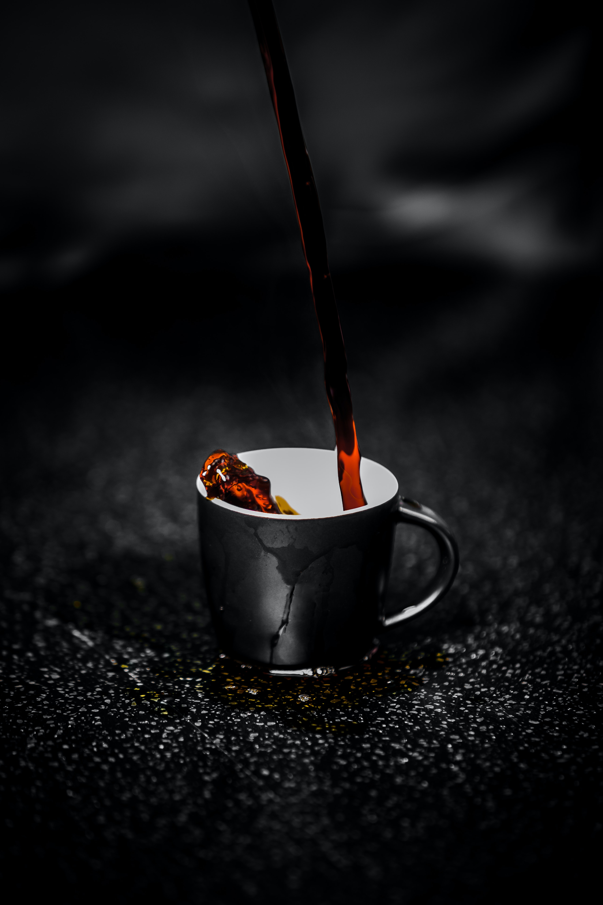

<!DOCTYPE html>
<html>
    <head>
        <meta charset="utf-8">
        <meta name="description" content="Rovers and Whiskers Dog Training">
        <meta name="Keywords" content="Ruth Ann, Web Deveopment, CSS, HTML, Front End">
        <link href="projects.css" rel="stylesheet">
        <link href="projects.scss" rel="stylesheet" type="text/css">
        <meta name="viewport" content="width=device-width, initial-scale=1.0">
    </head>
    </html>
    <body >
        <div id="container">
        <nav>
            <ul>
                <li><a href="index.html" class="active">Home</a></li>
                <li><a href="Projects.html"> Projects</a></li>
                <li><a href="about.html">About</a></li>
            </ul>
        </nav>
        <section class="Project1">
            <h1>Maria Montessori</h1>
            <p>This is an on going site about Montessori Education<a href="Portfolio/Philosophy/index.html" target="_blank"> here </a> to go to the site.</p>
            
        </section>
        <section class="Project2">
            <h1>Savanna’s Coffee House</h1>
            <p>Here is one of my first projects.  I created a webpage for a cafe.  I liked the colors I chose for the site and how they complimented the site. Click <a href="Portfolio/FinalProject/Index.html" target="_blank"> here </a> to go to the site.</p>
            
        </section>
        <section class="Project3">
            <h1>Cocoa Site</h1>
            <p>I made this site about cocoa using bootstrap.  I enjoyed learning how bootstrap can help with web development. Click <a href="Portfolio/Cocoa/index.html" target="_blank"> here </a> to go to the site.</p>
            
        </section>
        <section class="Project4">
            <h1>Rover and Whiskers</h1>
            <p>This is the latest site I have made.  It was built for a behavior specialist. I am most proud of how responsive it is for a variety of devices. Click <a href="Portfolio/Final/HomePage.html" target="_blank"> here </a> to go to the site.</p>
            
        </section>
        <footer>
            <a href="https://www.linkedin.com/in/ruth-aakre-8a277b272/" target="_blank"></a> 
            <a href="https://github.com/RuthAnn1" target="_blank"></a>   
        </footer>
</div>
</body>
</html>